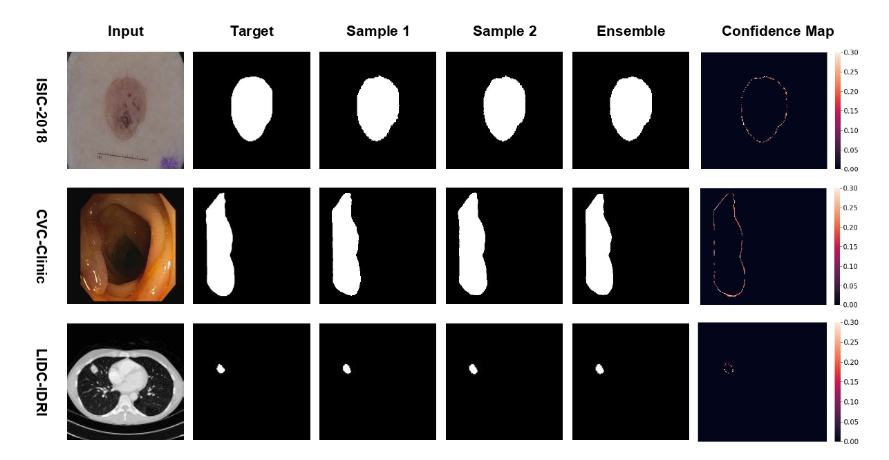
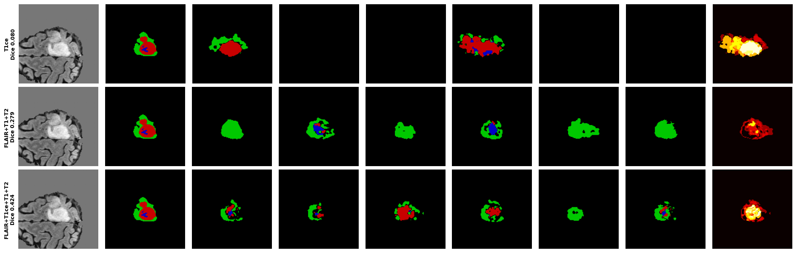
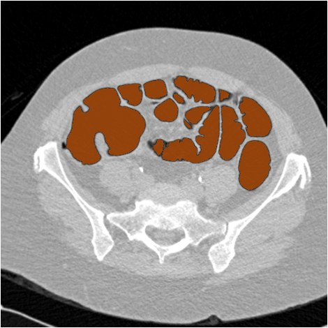
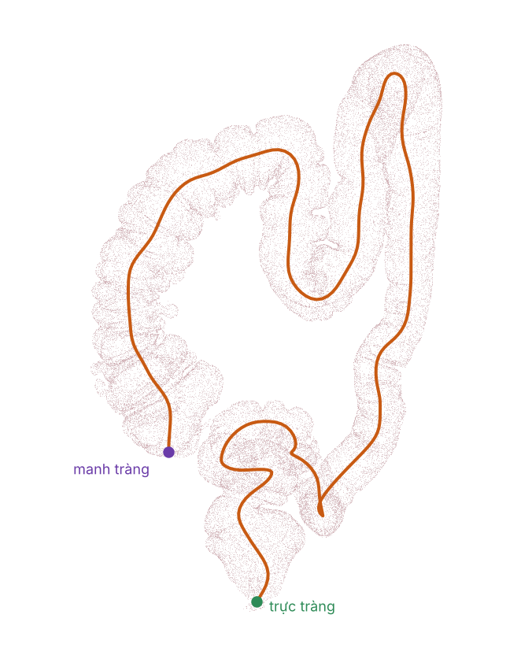
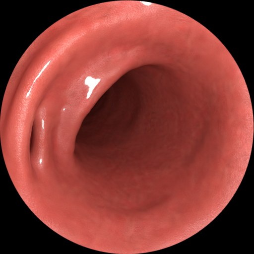
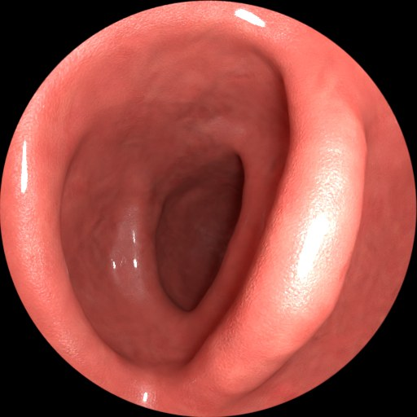
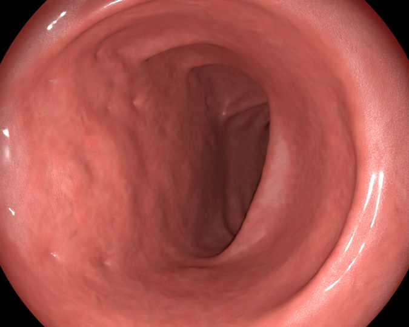
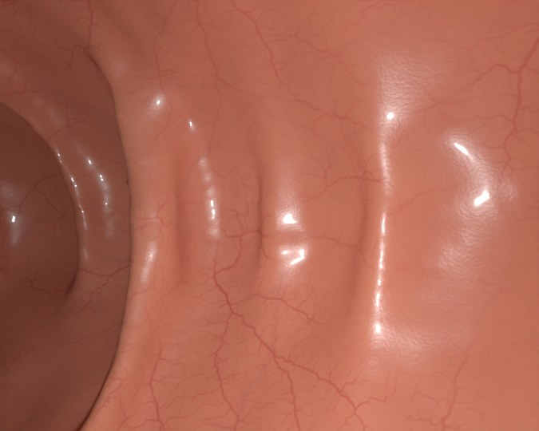
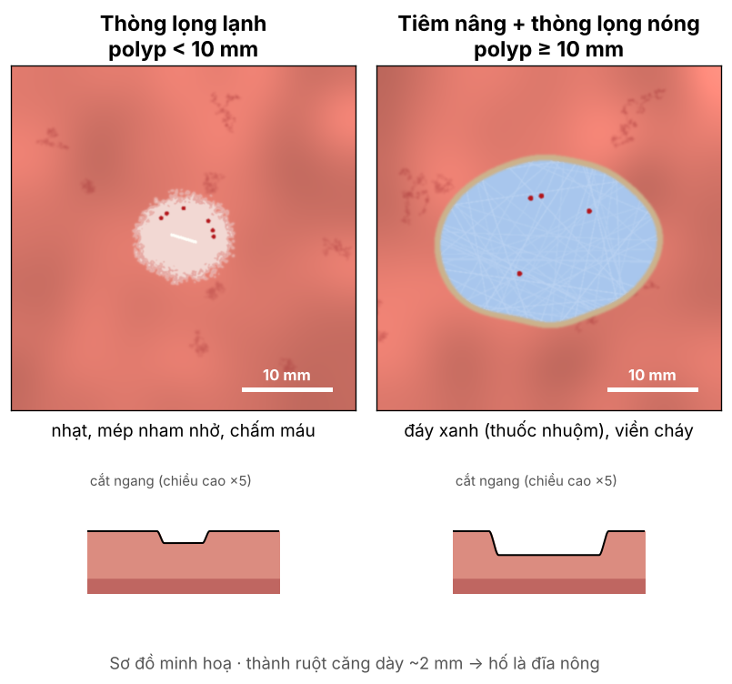
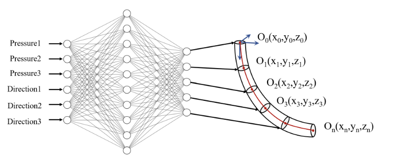

Về bản thân
Thành viên nhóm nghiên cứu, đề tài robot mềm nội soi & in sinh học tại chỗ (VinUniversity)
Giảng viên tạo nguồn & Nghiên cứu viên, Trường Đại học Công nghệ, ĐHQGHN (VNU-UET)
Nghiên cứu viên, Nhóm nghiên cứu liên ngành về Y sinh và Sức khoẻ (IS-VNU)
Nghiên cứu viên, Digital Biology Lab (Amsterdam, làm việc từ xa)
Nền tảng: Khoa học máy tính & AI cho ảnh y tế — em không xuất thân từ y khoa.
Học vấn & công tác
-
Hiện tại
Thành viên nhóm nghiên cứu — Đề tài robot mềm nội soi, VinUniversity -
06/2024 – nay
Giảng viên & Nghiên cứu viên — VNU-UET
Cùng lúc: IS-VNU (từ 08/2025) · Digital Biology Lab, Amsterdam -
03/2024 – 12/2025 · Hà Nội
Thạc sĩ Khoa học Máy tính — Trường Đại học Công nghệ, ĐHQGHN
Điểm trung bình 3.59 / 4.00 · Luận văn 9.4 / 10 -
09/2019 – 05/2023 · Lincoln, Nebraska, Hoa Kỳ
Cử nhân Khoa học Máy tính — University of Nebraska–Lincoln
Điểm trung bình 3.73 / 4.00 · Học bổng Global Laureate · Dean's List ×4 -
2022 – 2024
Kỹ sư — Nelnet (Hoa Kỳ) · Tinhvan Software
Em làm gì — nói ngắn gọn
Khoanh vùng tổn thương trên ảnh
Polyp đại tràng, u não trên MRI, nốt phổi, tổn thương da.
Biết mình chưa chắc ở đâu
Mô hình chỉ ra vùng nó không chắc → bác sĩ biết chỗ nào cần nhìn lại.
Viết báo cáo từ ảnh
Báo cáo X-quang ngực bám vào vùng ảnh cụ thể, kiểm tra lại được.
Dữ liệu & điều khiển robot (mới)
Video nội soi tổng hợp và AI điều khiển robot mềm — trong đề tài này.
Điểm chung: AI làm việc trên dữ liệu y sinh thật và nói ra được mức độ chắc chắn của mình.
1 · Khoanh vùng bằng mô hình sinh
FJCAI 2026 🏆 Báo cáo xuất sắc nhất (LatentFM)
Ý tưởng. Không vẽ một đường viền duy nhất, mà vẽ nhiều đường viền hợp lý — giống nhiều bác sĩ cùng khoanh một tổn thương.
Lợi ích. Chỗ các đường viền không khớp nhau chính là chỗ mơ hồ → bản đồ độ tin cậy.
Kết quả. Tốt nhất hoặc cạnh tranh trên polyp đại tràng (CVC-Clinic), da (ISIC-2018), nốt phổi (LIDC-IDRI).

2 · Độ bất định trên MRI 3D
Phân đoạn u não khi thiếu chuỗi xung đang làm
Bối cảnh. Mỗi bệnh nhân có nhiều chuỗi xung (T1, T2, FLAIR, T1CE), nhưng thực tế hay thiếu một hoặc vài chuỗi.
Mục tiêu. Vẫn khoanh vùng tốt khi thiếu, và chỉ rõ vùng nào mô hình không chắc.

2 · Đọc bản đồ độ bất định

Cách làm: chạy mô hình nhiều lần — chỗ các kết quả khác nhau nhiều là chỗ mô hình không chắc. Kiểm chứng: bỏ dần những vùng không chắc nhất thì phần còn lại phải chính xác hơn.
Các hướng khác
Sinh báo cáo X-quang ngực
Mỗi "chuyên gia" nhỏ phụ trách một nhóm bệnh lý; báo cáo bám vào vùng ảnh nên kiểm tra lại được. Đang phản biện.
Tìm tài liệu cho mô hình ngôn ngữ
Chia văn bản theo ý thay vì theo độ dài → trả lời kèm dẫn chứng chính xác hơn. SOICT 2024, luận văn thạc sĩ.
Xoá tri thức đa ngôn ngữ
Đánh giá việc "xoá" một kiến thức khỏi mô hình ngôn ngữ lớn trên nhiều thứ tiếng. MULAN, TMLR — đang phản biện.
Các công bố khoa học
- 2026 MULAN: Benchmarking and Evaluating Multilingual Knowledge Unlearning
- 2025 LatentFM: A Latent Flow Matching Approach for Generative Medical Image Segmentation
- 2025 Diffusion Model in Latent Space for Medical Image Segmentation Task
- 2025 A Vietnamese Dataset for Text Segmentation and Multiple Choices Reading Comprehension
- 2024 Enhancing Retrieval Augmented Generation with Hierarchical Text Segmentation Chunking
Đề tài & phần việc của em
Robot mềm đi qua đường tự nhiên tới tổn thương trong đại tràng, rồi in vật liệu sinh học trực tiếp lên đó — thay vì in ở ngoài rồi mổ để cấy vào [1].
1 · Tiếp cận
Đưa ống mềm tới tổn thương, không tạo vòng, không tì mạnh vào thành ruột
B2 · Định vị
Camera đầu ống dựng bản đồ đoạn ruột đã đi qua
A3 · Hiểu tổn thương
Hình dạng 3D, kích thước thật của polyp / hố sau cắt
A4 · In sinh học
Đặt vật liệu sinh học lên tổn thương
thiết bị F3DB5 · Kiểm tra
Lớp in có đúng chỗ, đúng hình dạng không
AABộ dữ liệu video nội soi
Dựng từ CT của bệnh nhân thật


Hiện đã dựng xong 1 ca · mục tiêu 20–30 ca · dự kiến nộp Scientific Data năm 2027
Hình ảnh từ video đang tinh chỉnh




Polyp & hố sau cắt

- < 10 mm: thòng lọng lạnh → hố nhỏ, nhạt, mép nham nhở
- ≥ 10 mm: tiêm nâng + thòng lọng nóng → hố bầu dục, đáy xanh, viền cháy
- Lưu hình học của hố làm đáp án
- Hỏi bác sĩ: thực tế ở Việt Nam cắt thế nào? Hố trông như vậy đã đúng chưa?
Theo hướng dẫn ESGE 2024 [4] · sơ đồ đơn giản hoá, đang thiết kế
BLái robot mềm an toàn
Cho cả phần thân ống đang nghiên cứu
Vấn đề. Ống mềm được đẩy từ ngoài vào; phần thân không nhìn thấy dễ tạo vòng và tì vào thành ruột. Tạo vòng gây khoảng 79% các cơn đau khi nội soi [5].
Ý tưởng. Học tăng cường: AI tự thử – sai rất nhiều lần trong mô phỏng, được thưởng khi tiến an toàn, bị phạt khi tì mạnh hoặc tạo vòng.
Điểm khác. Không chỉ lái đầu ống, mà luôn "hình dung" được cả thân ống — kèm mức độ chắc chắn — để quyết định có nên đẩy tiếp không.

BCách tiếp cận
AI điều khiển
Chọn áp suất, hướng uốn; quyết định đẩy – giữ – rút
Đại tràng mô phỏng
Thân robot uốn theo áp suất, chạm vào thành ruột
Chấm điểm
Thưởng: đầu ống tiến lên
Phạt: lực tì lớn, tạo
vòng, kéo căng mạc treo
↺ Lặp lại rất nhiều lần → AI học cách tiến mà không gây hại
Lộ trình, từ dễ đến khó
Phối hợp với nhóm bác sĩ
Chấm video tổng hợp
Thang 1–5 cho lòng ruột, nếp gấp, niêm mạc, ánh sáng, chuyển động camera. Form online.
Polyp & hố sau cắt
Hình dạng, kích thước có hợp lý không; ước lượng kích thước (mm) trên clip.
Thế nào là "an toàn"
Đoạn nào hay tạo vòng, đoạn nào dễ tổn thương; bác sĩ gỡ vòng bằng thao tác nào.
Xác nhận trên CT
Bác sĩ X-quang: polyp trên CT có khớp với hồ sơ thử nghiệm không.
Gói gọn trong một buổi khoảng 60–90 phút. Chỉ dùng ảnh tổng hợp và dữ liệu công khai đã ẩn danh; sẽ nộp hội đồng đạo đức theo thủ tục rút gọn.
Những khó khăn em lường trước
- Dữ liệu tổng hợp không phải ruột thật. Hình dạng ruột lấy từ CT thật, nhưng màu, mạch máu và cách bác sĩ lái ống soi vẫn do mình mô phỏng.
- Mô luôn chuyển động. Nhu động, nhịp thở, robot chạm vào làm mô biến dạng — video hiện tại vẫn là ruột tĩnh.
- Từ mô phỏng sang thật. Chưa có mô phỏng mở nào tạo vòng giống thật; AI giỏi trong mô phỏng chưa chắc giỏi trên robot thật.
- Kiến thức lâm sàng. Em xuất phát từ AI nên phần nội soi và vật liệu sinh học em phải học nghiêm túc — rất mong được các bác sĩ chỉ thêm.
Tài liệu tham khảo
[1] D. T. Vu, N. A. Phan, S. T. Ngo, M. T. Phan, T.-A. Truong, C. C. Nguyen, P. T. Phan, H.-P. Phan, T. N. Do, M. T. Thai. Soft Robotics and Advanced Technologies for Minimally Invasive Bioprinting: The Future of Internal Organ Repair. Advanced Science, 13(e23532), 2026. doi:10.1002/advs.202523532
[2] T. L. Bobrow, M. Golhar, R. Vijayan, V. S. Akshintala, J. R. Garcia, N. J. Durr. Colonoscopy 3D Video Dataset with Paired Depth from 2D-3D Registration. Medical Image Analysis, 2023. arXiv:2206.08903
[3] C. D. Johnson et al. Accuracy of CT Colonography for Detection of Large Adenomas and Cancers (ACRIN 6664). New England Journal of Medicine, 359:1207–1217, 2008 · dữ liệu trên The Cancer Imaging Archive (TCIA)
[4] M. Ferlitsch et al. Colorectal polypectomy and endoscopic mucosal resection: ESGE Guideline – Update 2024. Endoscopy, 56:516–545, 2024
[5] S. G. Shah et al. Patient pain during colonoscopy: an analysis using real-time magnetic endoscope imaging. Endoscopy, 34(6):435–440, 2002. doi:10.1055/s-2002-31995